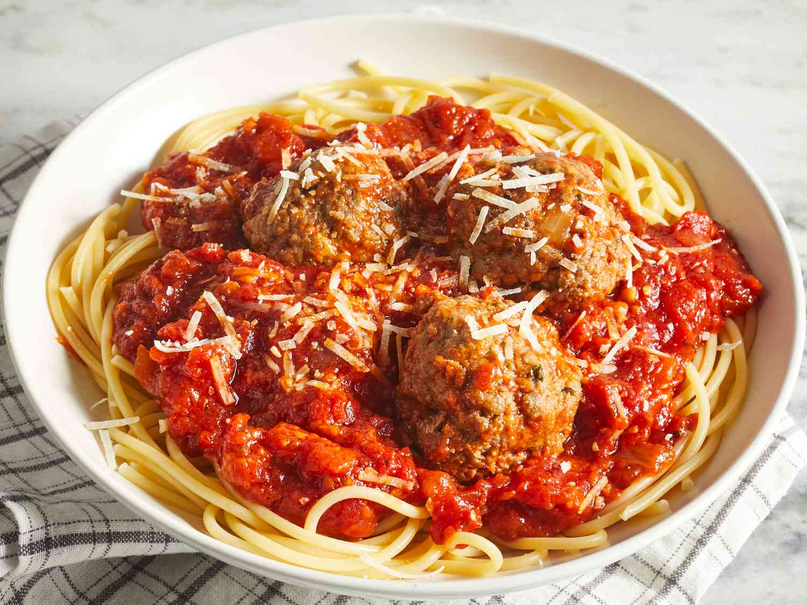

Spaghetti and Meatballs

Description
An Italian classic, this hearty dish is sure to both delight and satisfy
Ingredients
- Spaghetti Noodles
- Marina Sauce
- Meatballs
- Parmesan Cheese (optional)
Steps
- Boil water in a cooking pot, and bring to a rolling boil
- Place Spaghetti noodles into pot.
- Remove noodles once they soften, and place in strainer.
- Plate noodles, and cover with marina sauce.
- Top with meatballs, and serve!
Home Page